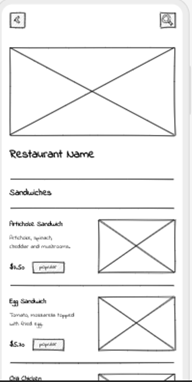
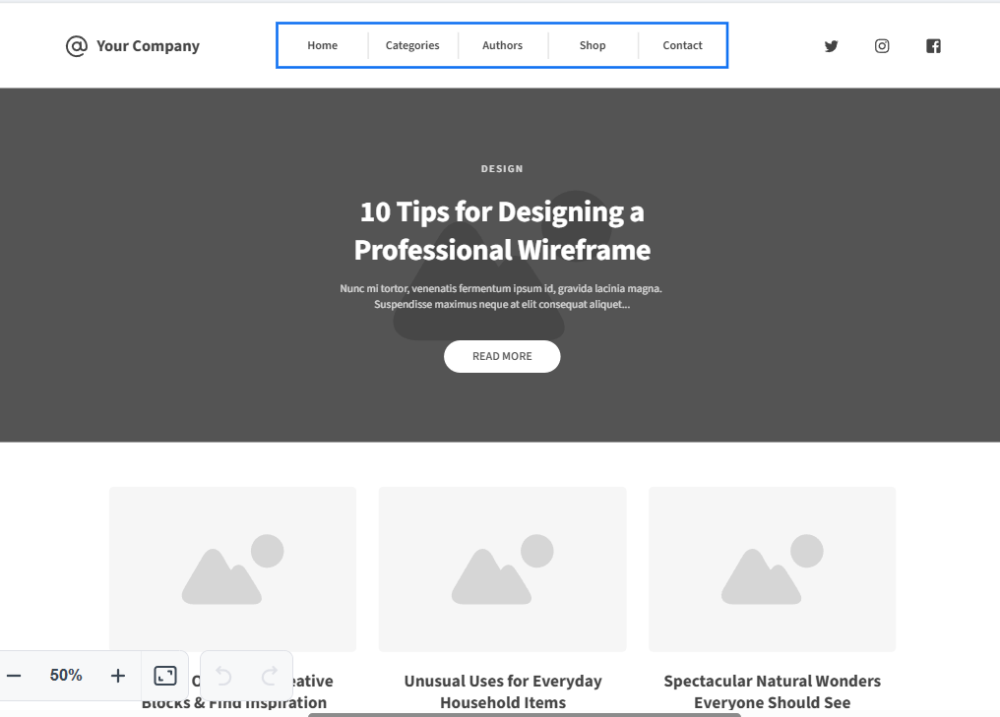

Site Name
Recommended Cars in Ecuador was chosen to reflect the focus on the most used and recommended vehicles in the country, providing users with reliable information on purchasing options.
Site Purpose
The purpose of the site is to offer an informative platform for users who want to learn about the most recommended cars in Ecuador. Each vehicle has its own section with technical specifications and expert reviews, guiding buyers in making decisions.
Scenarios
- Which car is most suitable for traveling on Ecuador's mountainous roads?
- What safety features are most important when choosing a car?
Color Scheme
The following colors were selected for the site:
- #04080F - Very dark blue-black good for background or text contrast.
- #507DBC - Medium blue can be used for primary elements like buttons or links.
- #A1C6EA - Light blue ideal for accents or background highlights.
- #BBD1EA - Very light blue can be used for softer backgrounds or borders.
- #DAE3E5 - Light grayish blue perfect for a clean and neutral background.
Typography
The selected font is Arial, used throughout the site to maintain readability and a modern appearance. It will be used for titles and body text.
Wireframe
Below is a sketch of what the homepage might look like on mobile and desktop devices:
 Car Name 1
Engine: Engine details
Fuel Consumption: Consumption details
Year: Year details
Safety: Safety details
Expert Review: Detailed car description...
Estimated Price: USD 15,000
Other relevant details...